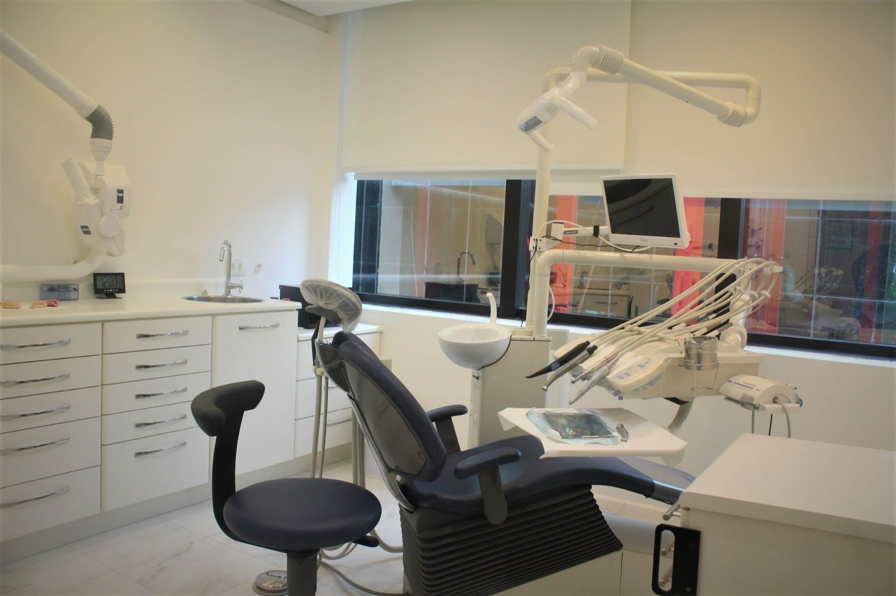
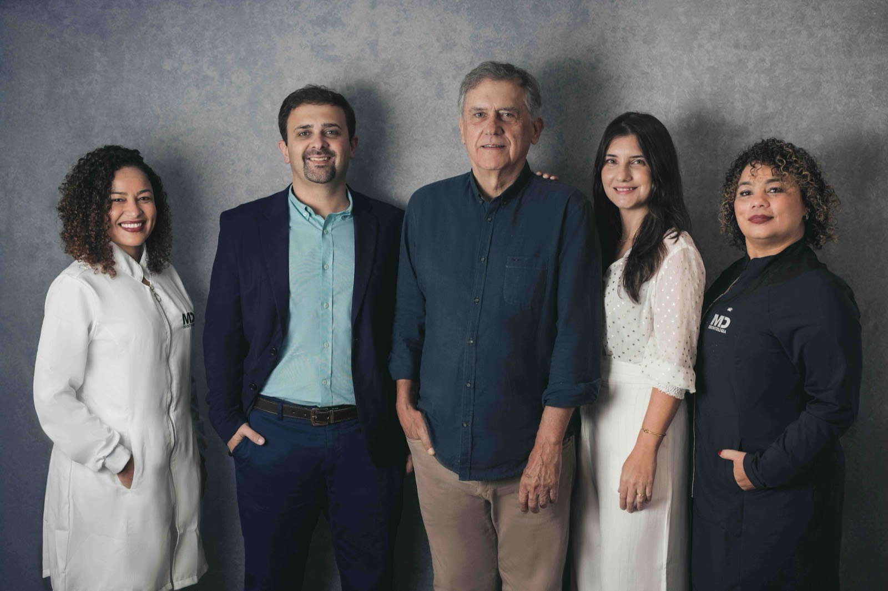

Os Dentistas Mais Bem Avaliados da Barra da Tijuca
Se você está buscando pelos dentistas mais bem avaliados na Barra da Tijuca, sua busca pode ter acabado aqui! A MD Frossard Odontologia, com unidades na Barra da Tijuca e em Botafogo, é referência quando o assunto é cuidado com o sorriso, profissionalismo e aquele acolhimento que todo paciente merece.

Por que a MD Frossard é tão bem avaliada?
Primeiro, vamos ao que interessa: qualidade. Aqui não estamos falando só de dentes alinhados ou um clareamento brilhante (apesar de fazermos isso muito bem, diga-se de passagem). Estamos falando de um atendimento completo, que começa com o sorriso na recepção e termina com o seu sorriso mais confiante no espelho.
Nossa jornada de mais de 38 anos nos ensinou que o segredo de um sorriso perfeito vai muito além da estética: trata-se de confiança, bem-estar e um relacionamento próximo com cada paciente.
Atendimento de Alto Padrão
Focamos na alta performance através de uma odontologia contemporânea baseada em três pilares: Relacionamento, Confiança e Pontualidade.
Equipe de Especialistas de Alto Nível
Nossa equipe é composta por profissionais que são referência em suas especialidades:
- Dr. Marcos Frossard — Especialista em Prótese, responsável por devolver não só dentes, mas também a confiança dos pacientes.
- Dr. Davi Frossard — Especialista em Implantes e Prótese, conhecido pelo cuidado e atenção percebidos em cada detalhe do atendimento.
- Dra. Luciana Peroni — Especialista em Prótese dentária e endodontia, com um olhar atento tanto para a saúde quanto para a estética dental.
E o melhor? Todos são também experts em estética dental. Afinal, saúde e beleza podem (e devem) andar juntas!
O que nossos pacientes dizem
"A impressão foi ótima. Atenção, eficiência e profissionalismo. Estão de parabéns."
— Renato Luna"Desde a primeira consulta fui acolhida por toda a equipe de forma maravilhosa. Sempre tive medo de dentista, mas desde que comecei meu tratamento na MD não tenho mais receio algum! Além do acolhimento, são excelentes, de muito boa formação, educação e de um profissionalismo surpreendente. Recomendo a clínica a todos!"
— Fernanda Nascimento Vieira"Já fiz vários procedimentos dentários, tanto implantes como cirurgias de enxerto, todos com excelentes resultados. Equipe carinhosa e profissional. Dr. Davi, além de profissional competente, tem sido muito atencioso. Já são quase dez anos de acompanhamento, sempre tudo de acordo com o previsto. Muito grata a todos!"
— Marli Curi Goulart"Atendimento impecável. Dr. Davi é um profissional perfeito, que utiliza tecnologias avançadas em todos os procedimentos. A segurança e confiança que ele me passou fizeram toda a diferença. Sou uma pessoa extremamente exigente, e a clínica MD Frossard superou minhas expectativas."
— Andréa MagalhãesOnde Estamos
Venha conhecer a clínica mais bem avaliada da região e descobrir por que somos referência em odontologia na Barra da Tijuca:
- Unidade Barra da Tijuca: Shopping Città America — Av. das Américas, 700, Bloco 2 / Sala 143
- Unidade Botafogo: Rua Marques, 15, Humaitá, Rio de Janeiro
Contato: (21) 3513-8479 ou via WhatsApp. Não perca tempo — venha conhecer o que há de melhor em odontologia! Seu sorriso agradece.
